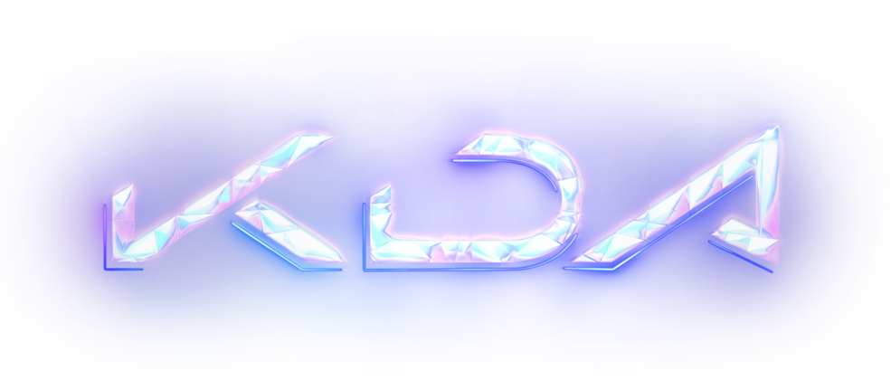

Hatsune Miku é um software de voicebank para Vocaloid desenvolvida pela Crypton Future Media e seu antropomorfismo moe, uma menina de 16 anos de idade com longas maria-chiquinhas turquesa.

K/DA é um grupo feminino virtual de K-pop que consiste em quatro versões das personagens de League of Legends, Ahri, Akali, Evelynn e Kai'Sa.
Aespa é um grupo feminino sul-coreano formado pela SM Entertainment. Composto por quatro integrantes, Karina, Giselle, Winter e Ningning. No qual, todas as integrantes possuem seus próprios avatares virtuais.